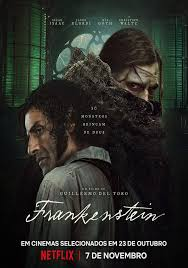

98th Annual Academy Awards
Melhor Trilha Sonora
Conheça os candidatos à Premiação do Oscar 2026 por Melhor Trilha Sonora.

Vencedora
Pecadores (Sinners)
Compositor: Ludwig Göransson.
A Sonoridade: Göransson continua sua fase de experimentação radical. Para o horror gótico de Coogler, ele mistura instrumentos tradicionais do sul dos EUA (como o banjo e o violino fiddle) com distorções eletrônicas e sons industriais.
O Impacto: A trilha cria uma sensação de opressão constante. O uso de silêncios súbitos seguidos por batidas tribais pesadas acentua o terror sobrenatural e a tensão racial da trama.
Uma Batalha Após a Outra
Compositor: Jonny Greenwood.
A Sonoridade: O guitarrista do Radiohead entrega uma composição densa e eclética. A trilha transita entre o jazz caótico, cordas barrocas e sintetizadores analógicos dos anos 70 e 80.
O Impacto: Greenwood consegue traduzir a paranoia política de Paul Thomas Anderson em música. A trilha não apenas acompanha as imagens, mas dita o ritmo nervoso e imprevisível da narrativa épica de quase três horas.

Bugonia
Compositor: Jerskin Fendrix.
A Sonoridade: Seguindo o tom bizarro do filme de Yorgos Lanthimos, a música é propositalmente estranha, utilizando instrumentos de sopro desafinados, coros infantis e estruturas rítmicas que desafiam a lógica tonal.
O Impacto: A trilha reforça a sensação de desequilíbrio mental do protagonista. É uma composição que "incomoda" de forma brilhante, tornando-se essencial para a atmosfera de humor ácido e ficção científica do filme.

Frankenstein
Compositor: Alexandre Desplat.
A Sonoridade: Desplat entrega uma partitura majestosa e profundamente melancólica. Com o uso de uma orquestra completa, ele foca em temas de cordas e piano que evocam a solidão existencial da Criatura.
O Impacto: É a trilha mais clássica e emocional da lista. Ela humaniza o monstro de Del Toro, trazendo uma beleza trágica que remete ao romantismo europeu do século XIX, contrastando com os momentos de percussão intensa nas cenas de criação.

Hamnet: A vida Antes de Hamlet
Compositor: Dan Romer.
A Sonoridade: Uma trilha minimalista e naturalista. O foco está em instrumentos acústicos, sons da natureza integrados à melodia e vocais etéreos que remetem ao folclore inglês antigo.
O Impacto: A música de Hamnet funciona como uma oração silenciosa. Ela é sutil, raramente se sobrepondo aos diálogos, mas é fundamental para construir o estado de espírito meditativo e o processamento do luto que Chloé Zhao explora na tela.